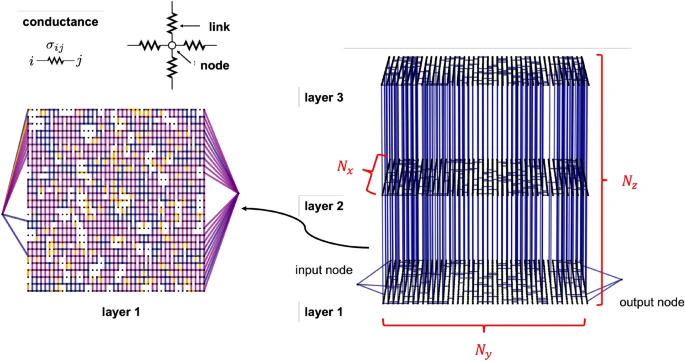

Research
-
BIODIVERSITY EMERGENCE IN DNA ECOSYSTEMS
OxDNA to Study Species Interactions
 To answer traditional ecological questions in biogeography and biodiversity we exploit a Molecular Dynamics coarse-grained model to study interactions among single strands of DNA, representing individuals of different species, which compete for binding to other oligomers considered as resources. [1]
To answer traditional ecological questions in biogeography and biodiversity we exploit a Molecular Dynamics coarse-grained model to study interactions among single strands of DNA, representing individuals of different species, which compete for binding to other oligomers considered as resources. [1] -
DYNAMICAL STOCHASTIC SIMULATION OF COMPLEX ELECTRICAL SYSTEM
Dynamical stochastic simulation of complex electrical behavior in neuromorphic networks of metallic nanojunctions
We developed a model based on a large three dimensional regular resistor network with non-linear conduction mechanisms and stochastic updates of conductances. By increasing enough the number of nodes in the network, the features experimentally observed in the electrical conduction properties of nanostructured gold films are qualitatively reproduced in the dynamical behavior of the system. [1]
[1] Scientific Reports
(2022) , volume 12, Article number: 12234